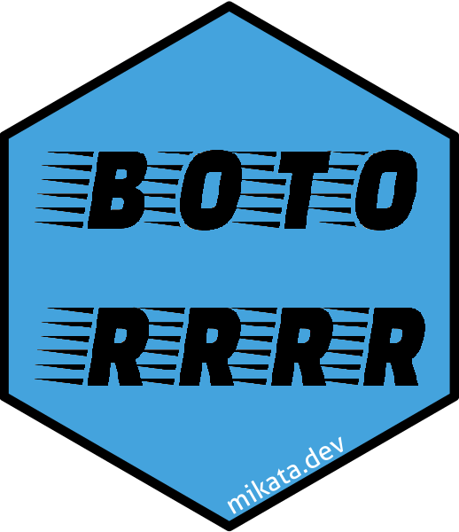

botor: Reticulate wrapper on ‘boto3’ 
This R package provides raw access to the ‘Amazon Web Services’ (‘AWS’) ‘SDK’ via the ‘boto3’ Python module and some convenient helper functions (currently for S3 and KMS) and workarounds, eg taking care of spawning new resources in forked R processes.
Installation
This package requires Python to be installed along with the boto3 Python module, which can be installed from R via:
reticulate::py_install('boto3')If that might result in technical problems that you cannot solve, then it’s probably easier to install a standalone Python along with the system dependencies etc via rminiconda.
Once the Python dependencies are resolved, you can either install from CRAN or the most recent (development version) of botor can be installed from GitHub:
remotes::install_github('daroczig/botor')Loading the package
Loading the botor package might take a while as it will also import the boto3 Python module in the background:
system.time(library(botor))
#> user system elapsed
#> 1.131 0.250 1.191Getting started
Quick examples:
-
Check the currently used AWS user’s name:
iam_whoami() #> [1] "gergely-dev" -
Read a
csvfile stored in S3 using a helper function:s3_read('s3://botor/example-data/mtcars.csv', read.csv) #> mpg cyl disp hp drat wt qsec vs am gear carb #> 1 21.0 6 160.0 110 3.90 2.620 16.46 0 1 4 4 #> 2 21.0 6 160.0 110 3.90 2.875 17.02 0 1 4 4 #> ... -
Encrypt a string via KMS using a helper function:
kms_encrypt('alias/key', 'secret') #> [1] "QWERTY..." -
Get more info on the currently used AWS user calling the IAM client directly:
iam()$get_user() -
Create a new client to a service without helper functions:
ec2 <- botor_client('ec2') ec2$describe_vpcs()
AWS Auth
The botor package by default will use the credentials and related options set in environmental variables or in the ~/.aws/config and ~/.aws/credentials files. If you need to specify a custom profile or AWS region etc, there are various options with different complexity and flexibility:
- set the related environment variable(s) before loading
botor - call the
botor()function with the relevant argument to set the config of the default session for thebotorhelper functions, eg
botor(region_name = 'eu-west-42')- if you need to manage multiple sessions, then use the raw
boto3object from thebotorpackage andboto3.session.Sessionto init these custom sessions and the required clients/resources on the top of those, eg
my_custom_session1 <- boto3$Session(region_name = 'us-west-1')
my_custom_s3_client1 <- my_custom_session1$client('s3')
my_custom_session2 <- boto3$Session(region_name = 'us-west-2')
my_custom_s3_client2 <- my_custom_session2$client('s3')Using the raw boto3 module
The botor package provides the boto3 object with full access to the boto3 Python SDK. Quick example on listing all S3 buckets:
library(botor)
s3 <- boto3$resource('s3')
library(reticulate)
iter_next(s3$buckets$pages())Note that this approach requires a stable understanding of the boto3 Python module, plus a decent familiarity with reticulate as well (see eg iter_next) – so you might want to rather consider using the helper functions described below.
Using the default botor session
Calling botor() will provide you a default boto3 session that is cached internally. You can always override the default session by calling botor() again with new arguments. See eg setting the default boto3 session to use us-west-2:
A great advantage of using botor() instead of custom sessions is that it’s fork-safe. See eg:
Convenient helper functions
Besides the botor pre-initialized default Boto3 session, the package also provides some further R helper functions for the most common AWS actions, like interacting with S3 or KMS. Note, that the list of these functions is pretty limited for now, but you can always fall back to the raw Boto3 functions if needed. PRs on new helper functions are appreciated :)
Examples:
-
Listing all S3 buckets takes some time as it will first initialize the S3 Boto3 client in the background:
system.time(s3_list_buckets())[['elapsed']] #> [1] 1.426 -
But the second query is much faster as reusing the same
s3Boto3 resource:system.time(s3_list_buckets())[['elapsed']] #> [1] 0.323 -
Unfortunately, sharing the same Boto3 resource between (forked) processes is not ideal, so
botorwill take care of that by spawning new resources in the forked threads:library(parallel) simplify2array(mclapply(1:4, function(i) system.time(s3_list_buckets())[['elapsed']], mc.cores = 2)) #> [1] 1.359 1.356 0.406 0.397 -
Want to speed it up more?
library(memoise) s3_list_buckets <- memoise(s3_list_buckets) simplify2array(mclapply(1:4, function(i) system.time(s3_list_buckets())[['elapsed']], mc.cores = 2)) #> [1] 1.330 1.332 0.000 0.000
The currently supported resources and features via helper functions: https://daroczig.github.io/botor/reference/index.html
Error handling
The convenient helper functions try to suppress the boring Python traceback and provide you only the most relevant information on the error. If you want to see the full tracelog and more details after an error, call reticulate::py_last_error(). When working with the raw boto3 wrapper, you may find botor:::trypy useful as well.
s3_download_file('s3://bottttor/example-data/mtcars.csv', tempfile())
#> Error in s3_download_file("s3://bottttor/example-data/mtcars.csv", tempfile()) :
#> Python `ClientError`: An error occurred (404) when calling the HeadObject operation: Not Found
s3_read('s3://botor/example-data/mtcars2.csv', read.csv)
#> Error in s3_download(object, t) :
#> Python `ClientError`: An error occurred (403) when calling the HeadObject operation: Forbidden
botor(region_name = 'us-west-2')
s3_read('s3://botor/example-data/mtcars.csv', read.csv)
#> mpg cyl disp hp drat wt qsec vs am gear carb
#> 1 21.0 6 160.0 110 3.90 2.620 16.46 0 1 4 4
#> 2 21.0 6 160.0 110 3.90 2.875 17.02 0 1 4 4
#> ...Logging
botor uses the logger package to write log messages to the console by default with the following log level standards:
-
TRACEstart of an AWS query (eg just about to start listing all S3 buckets in an AWS account) -
DEBUGsummary on the result of an AWS query (eg number of S3 buckets found in an AWS account) -
INFOcurrently not used -
WARNcurrently not used -
ERRORsomething bad happened and logging extra context besides what’s being returned in the error message -
FATALcurrently not used
The default log level threshold set to DEBUG. If you want to update that, use the package name for the namespace argument of log_threshold from the logger package, eg to enable all log messages:
library(logger)
log_threshold(TRACE, namespace = 'botor')
s3_download_file('s3://botor/example-data/mtcars.csv', tempfile())
#> TRACE [2019-01-11 14:48:07] Downloading s3://botor/example-data/mtcars.csv to '/tmp/RtmpCPNrOk/file6fac556567d4' ...
#> DEBUG [2019-01-11 14:48:09] Downloaded 1303 bytes from s3://botor/example-data/mtcars.csv and saved at '/tmp/RtmpCPNrOk/file6fac556567d4'Or update to not fire the less important messages than warnings:
library(logger)
log_threshold(WARN, namespace = 'botor')You can use the same approach to set custom (or more than one) log appenders, eg writing the log messages to files, a database etc – check the logger docs for more details.
Why the name?
botor means “goofy” in Hungarian. This is how I feel when looking back to all the dev hours spent on integrating the AWS Java SDK in R – this includes AWR.KMS, where I ended up debugging and fixing many issues in forked processes, but AWR.Kinesis still rocks :)
The name also reminds you that it’s not exactly boto3, as eg you have to use $ instead of . to access methods.